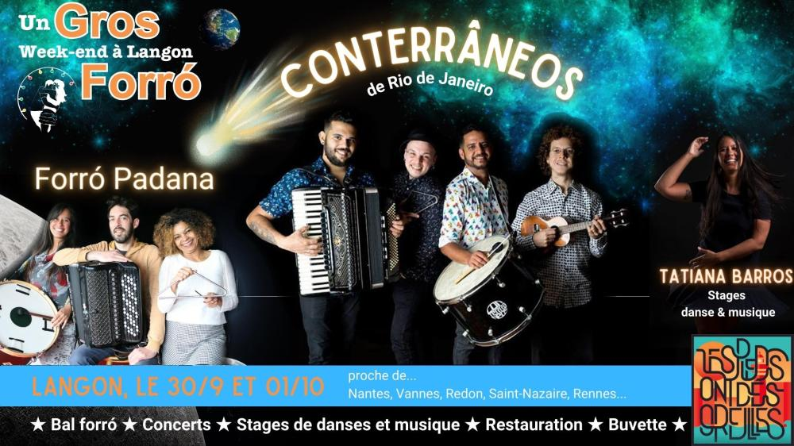

Gros Week-end Forró avec Conterrâneos à Langon

A l’occasion de la venue dans notre belle région, de 🔥 CONTERRANEOS 🔥, groupe sensationnel de forró de Rio de Janeiro, Le P’tit Bal Des Vallons nous accueille à Langon (nous, Les Pieds Ont Des Oreilles) pour organiser notre nouveau Gros Week-end Forró de la rentrée.
VENEZ, ÇA DEVRAIT ÊTRE COSMIQUE 👽
Voyez par vous-même: https://www.youtube.com/watch?v=-62ohOJBOHE
Au programme, des stages de danse et de musique forró avec Tatiana Barros, deux super concerts, bal forró, brunch, repas…
🥁 LE PROGRAMME 🥁
SAMEDI
👉 Stages de danse forró avec Tatiana 🕺💃
★ 14h – 16h: niveau 1
Cours accessible aux personnes ayant déjà dansées et maîtrisant les pas de base du forró.
★ 16h – 18h: niveau 2
Pratique courante du forró et bonne maîtrise des figures de base.
👉 18h – 20h30: Apéro / Restauration
Nous aurons un food truck sur place. Nous pourrons nous installer confortablement dans la grande salle pour dîner tous ensemble.
👉 De 20h30 jusqu’au bout de la nuit: Concert Conterrâneos et soirée forró
15€ en prévente, 18€ sur place.
Initiation à la danse vers 20h30.
Le concert commencera vers 21h30.
DIMANCHE
👉 11h – 13h: stage de musique avec Tatiana 🕺💃
Stage d’initation à la musique forró: rythmes (baião, xote, xaxado…) et instruments (zabumba, pandeiro, triangle, ganza, agogo….)
👉 14h – 16h: cours de danse forró tout niveau 🕺💃
👉 16h – 19h: Bal et Concert Forró Padana (à partir de 7€)
Concert à 17h.
💰 20€/stage via HelloAsso, 25€ sur place.
Un conseil, réservez en ligne 😉
VOUS VOULEZ NOUS AIDEZ 🫶?
Nous cherchons des bénévoles pour organiser cet événement (et tous les autres…).
Contactez-nous par mail avant de prendre vos billets, vous pourrez alors bénéficier d’une réduction.
Nous cherchons également un PHOTOGRAPHE pour le week-end entier. Il pourra bénéficier du fullpass gratuit.
LE LIEU
Le week-end se tiendra dans la superbe salle du P’tit Bal des Vallons, au 11 Port de Roche à Langon.
https://goo.gl/maps/fzrEvefDEgarypwr8
POUR VOUS LOGER
La mairie a dressée une liste des chambres d’hôtes de Langon: https://www.langon35.bzh/hebergements/
Sinon, si besoin, contactez-nous, nous avons quelques possibilités (un peu roots) !
COVOIT: c’est ici !
https://docs.google.com/spreadsheets/d/18pup31706aoBu_PXvhgpxJNuN4yYGhuRcLZrT8erUIk/edit?usp=sharing
➔ ACCÈS FACILE EN TRAIN : GARE DE FOUGERAY-LANGON
🎉 Réduction pour les adhérents des Pieds Ont Des Oreilles 🎉
20% sur tous les cours: code promo ADH2324
10% sur le Full Pass: FULL2324
Pour adhérer: https://www.helloasso.com/associations/les-pieds-ont-des-oreilles/adhesions/adhesion-podo-2023-24
Ate logo logo !